AI 슬롭은 어떻게 생겼나
AI 슬롭은 시기마다 모양을 바꿔 왔어요. 처음엔 보라색에서 파란색으로 넘어가는 그라데이션과 이모지 남발이 대표적이었어요. 아래 화면이 딱 그 시절 모습이에요. 어두운 배경 위에 'AI-powered intelligence'가 보라·파랑 그라데이션 글자로 빛나고, 버튼도 보라색이에요.
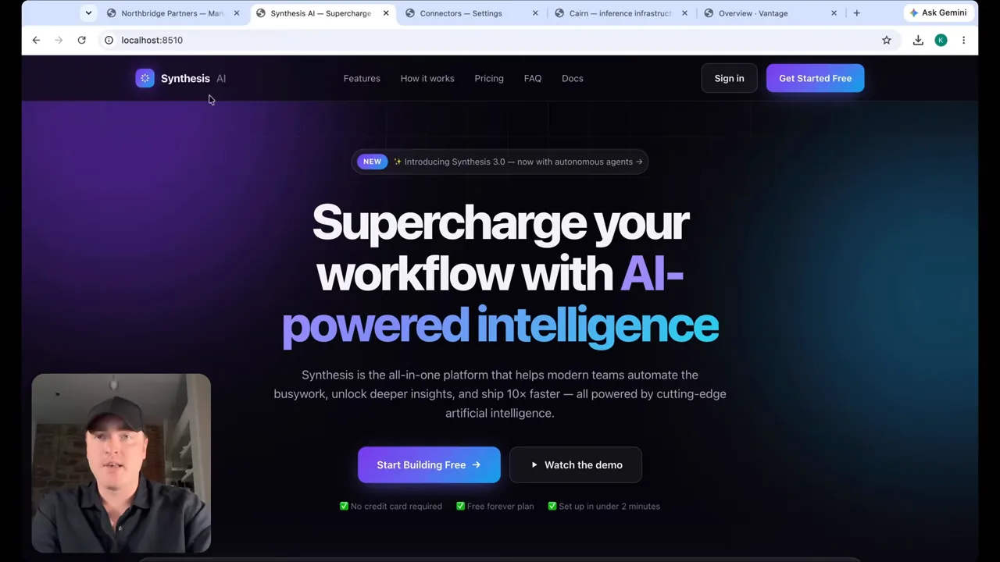
요즘 Claude Design으로 만든 화면은 다르게 생겼어요. 베이지 배경에 기울인 세리프체로 단어 하나를 강조하고('highest.'), 오른쪽에는 숫자와 막대그래프가 든 카드가 어색하게 떠 있어요. 발표자는 이 세 가지, 즉 베이지 배경, 특정 서체 조합, 자리에 안 맞는 카드를 지금의 AI 슬롭으로 꼽아요.
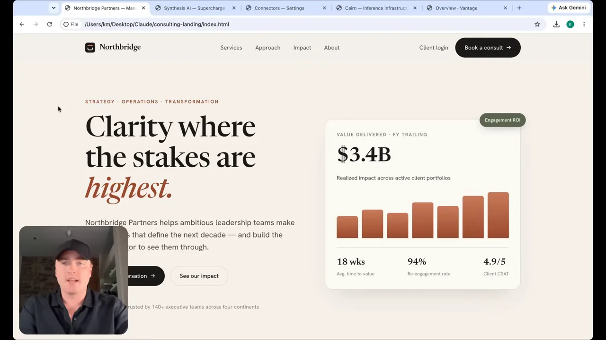
발표자는 이걸 없애는 핵심을 'AI에게 취향을 주는 것'이라고 말해요. 마음에 드는 화면 스크린샷을 몇 장 보여 주며 "이런 느낌으로"라고 하는 건 주니어 방식이라고 해요. 대신 도구를 연결해 디자인 과정 안에 취향을 넣어야 한다고 봐요.
Defeating AI slop is all about giving AI taste.
AI 슬롭을 이기는 건 결국 AI에게 취향을 주는 일이에요.
— 영상 00:32
영상 전체는 세 단계로 흘러가요. 아래 그림처럼 1단계에서 MCP 두 개로 재료(실제 화면, 직접 만든 이미지)를 주고, 2단계에서 고치는 어휘를 주고, 3단계에서 브랜드 규칙을 스킬로 묶어요. 마지막 데모에서는 셋이 함께 돌아가요.
1단계 ①: Mobbin MCP로 실제 화면 참고하기
첫 번째 MCP는 Mobbin이에요. Mobbin은 실제로 출시된 앱·웹 화면을 모아 둔 레퍼런스 서비스예요. 발표자는 약 62만 장이라고 말하는데, MCP 소개 페이지에는 '621,500+ shipped screens'라고 적혀 있어요. 아래 화면 왼쪽에 금융 앱, 헬스 앱, 쇼핑 앱 같은 분류가 보여요.
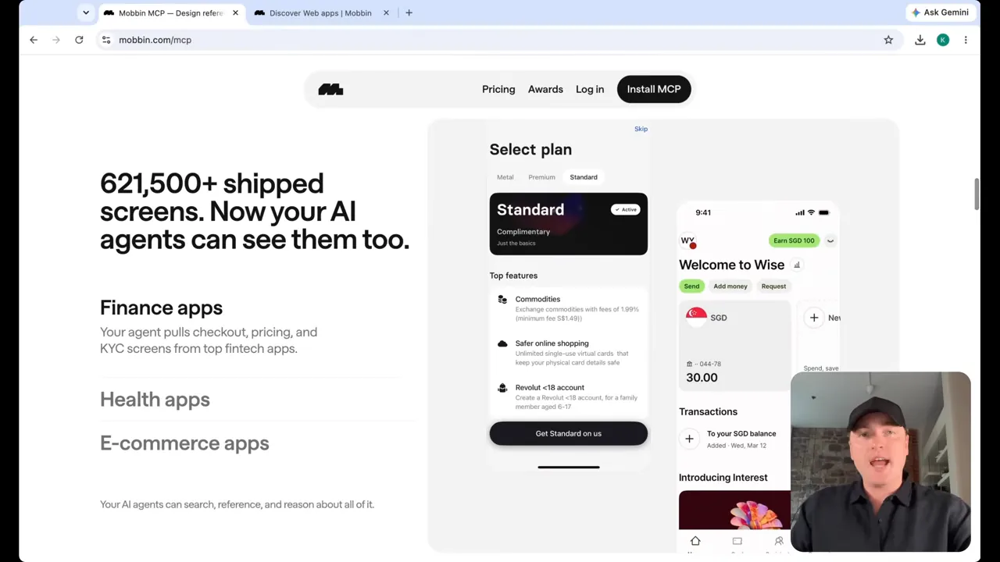
발표자는 Dribbble과 비교해요. Dribbble에는 멋지지만 실제로 쓰면 잘 될지 모르는 미래지향 시안이 많아요. Mobbin 화면은 좋은 디자인 팀이 만들고 사용자 테스트를 거쳐 실제로 출시한 것이라 품질 기준이 있다는 거예요.
화면은 카테고리, 화면 종류, UI(User Interface) 요소, 플로우별로 찾을 수 있어요. 예를 들어 결제 서비스의 모바일 온보딩을 만든다면 Stripe 앱을 골라 Flows 탭에서 온보딩만 모아 볼 수 있어요. 아래 화면 왼쪽 목록에 Onboarding, Payments 같은 플로우 이름이 있고, 오른쪽에 'Signing up for an account' 흐름의 화면들이 이어져 있어요.
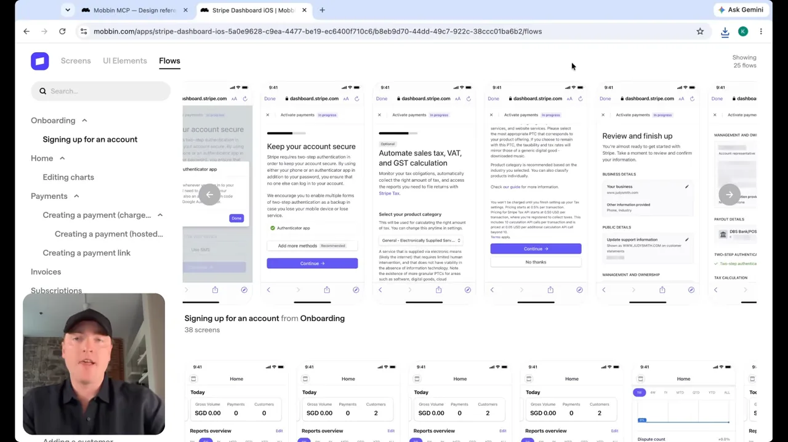
Claude에 연결하기
Mobbin 설정의 MCP 페이지에는 도구별 연결 방법이 있어요. 아래 화면은 Claude Code를 고른 상태라 터미널 명령어가 보여요. 발표자는 "디자이너는 터미널을 별로 안 좋아하니까"라며 'see all supported clients'로 가서 Claude 데스크톱·웹 안내를 따라가요.
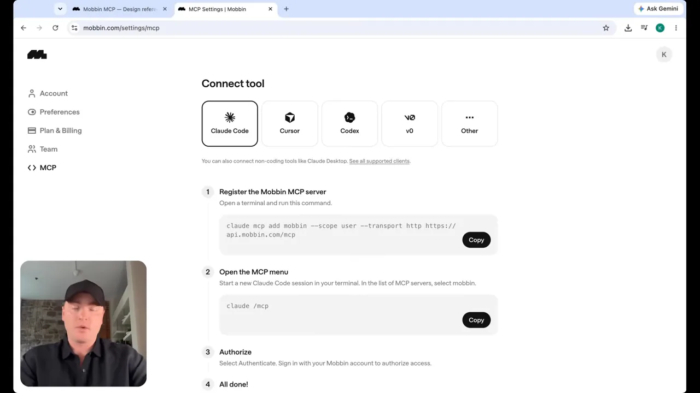
Claude 데스크톱 앱에서는 Customize → Connectors로 가서 Mobbin을 검색하고 Connect를 누르면 돼요. 발표자는 예전엔 직접 연결해야 했던 것들이 이제 디렉터리에서 바로 된다고 말해요. 아래는 그 Directory 창이에요.
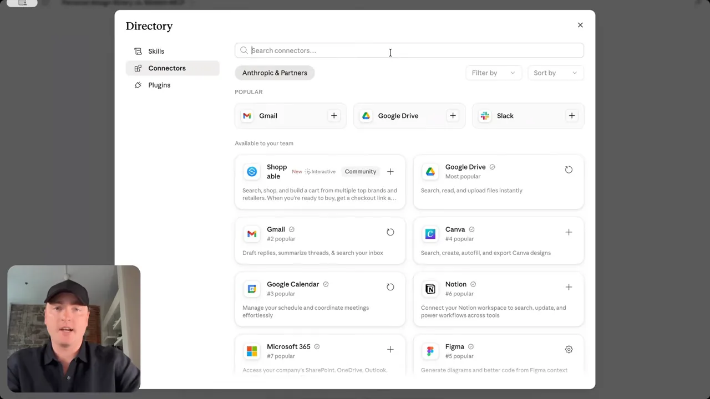
인증이 끝나면 Mobbin 커넥터 설정에 도구 권한 목록이 생겨요. Search Flows, Search Screens, Search Sections 세 가지가 보여요. AI가 플로우, 화면, 웹 섹션을 직접 검색할 수 있게 된 거예요.
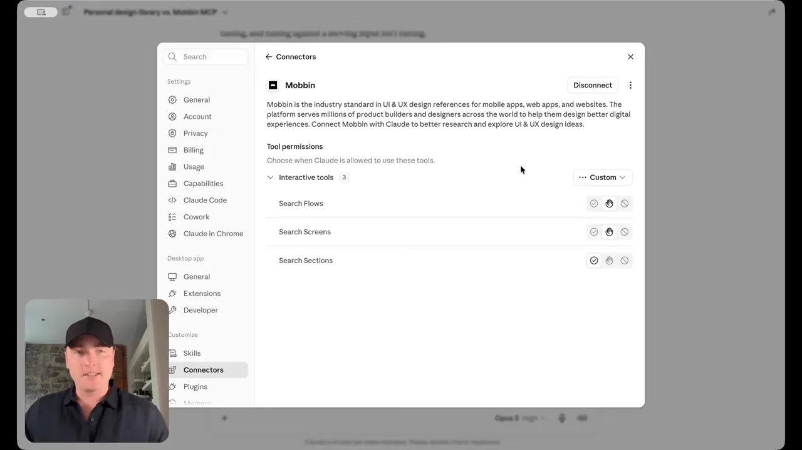
데모: Mistral AI 커넥터 페이지
발표자는 Mobbin에서 Mistral AI의 커넥터 설정 화면을 골라요. 아래 화면 왼쪽 위에 'My Connectors'와 'Featured Connectors'로 나뉜 원본이 보여요.
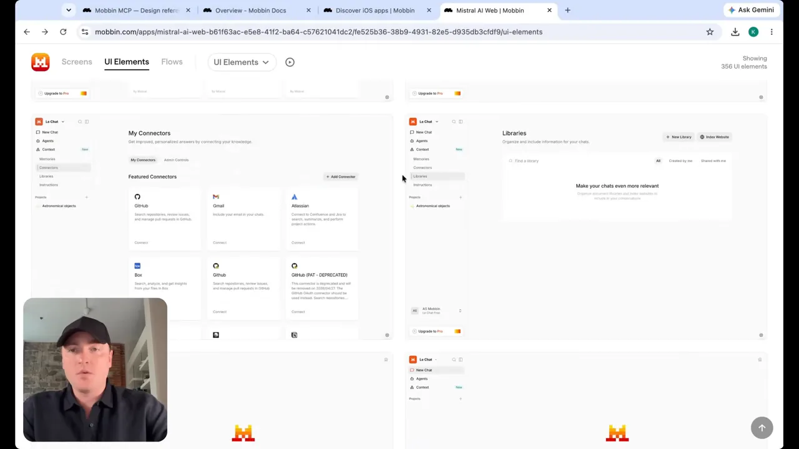
요청은 "Mistral AI의 커넥터 페이지가 마음에 드는데 비슷한 걸 만들어 줄래?" 한 줄이었어요. 결과 화면 위쪽에 활성 커넥터 수, 마지막 동기화, 확인이 필요한 커넥터 요약이 있고, 아래에는 Connected 목록과 Available 목록이 따로 있어요. 원본에 없던 '이미 연결된 것' 구분을 AI가 스스로 더한 거예요.
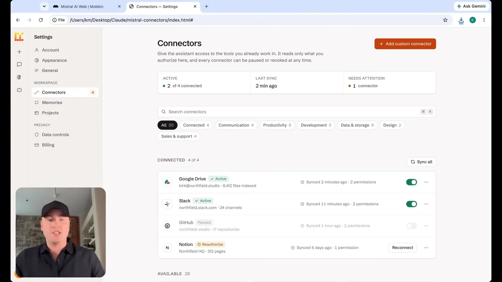
발표자는 예전에 Mobbin MCP를 쓸 때는 원본과 너무 똑같이 나오는 경우가 있었는데, 이번에는 자기 해석을 잘 더했다고 평가해요.
1단계 ②: Higgsfield MCP로 이미지 직접 만들기
Mobbin으로 레이아웃과 스타일은 쉽게 따라 할 수 있어요. 문제는 이미지예요. 아래 Mistral AI 히어로 섹션은 주황색 산맥 그림이 화면 전체 분위기를 만들어요. 이런 이미지가 손에 없으면 따라 만들기가 아주 어렵다고 발표자는 말해요.
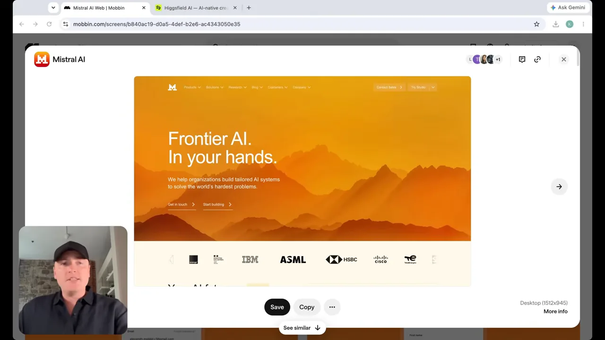
두 번째 MCP는 Higgsfield예요. 여러 이미지·영상 생성 모델을 한곳에 모은 서비스예요. 발표자는 다른 영상 작업 때 만든 테슬라 이미지를 보여 줘요. 아래 화면 왼쪽 위의 빨간 차가 그 이미지이고, 아래 입력창에 '테슬라 이미지, 흰 배경, 빨간색' 같은 프롬프트가 보여요. 이 이미지를 다시 영상으로 바꾸기도 했대요.
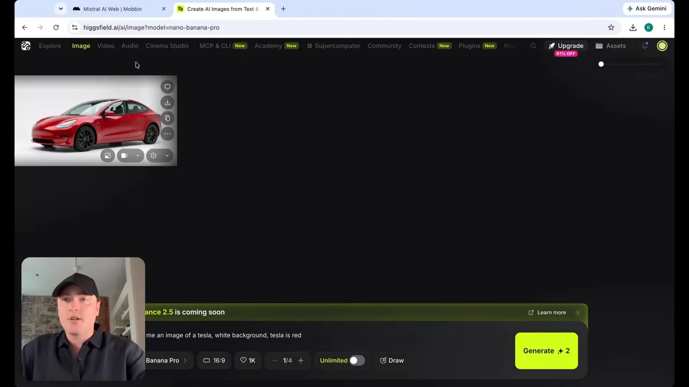
연결 방법은 Mobbin과 거의 같아요. Higgsfield MCP 페이지에서 쓰는 도구(Claude, ChatGPT, Cursor, Claude Code 등)를 고르면 단계별 안내가 나와요. 아래 화면에는 커넥터 URL(Uniform Resource Locator) 복사 → Claude의 Customize로 이동 → 로그인하고 시작, 세 단계가 보여요.
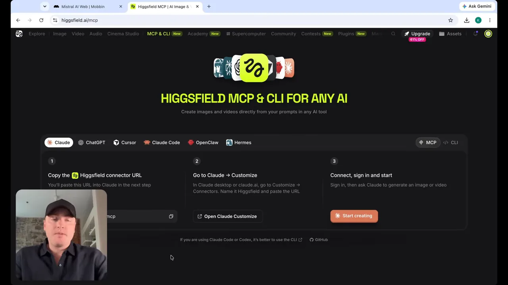
두 MCP를 함께 쓰기
이번 요청은 이랬어요. Mistral AI 히어로의 배경 느낌을 살린 화면을 만들고, Higgsfield MCP로 어울리는 배경 이미지를 생성하되, 주황 대신 회색 톤을 써서 레퍼런스를 그대로 베낀 것처럼 보이지 않게 해 달라고요. 발표자는 Mobbin 화면을 1:1로 복제하는 건 윤리적이지 않다고 강조해요.
결과는 'Cairn'이라는 가상 서비스의 랜딩 페이지예요. 왼쪽 위 큰 제목과 짧은 설명, 링크 두 개의 배치는 Mistral AI 예시와 비슷해요. 하지만 뒤의 회색 산맥 사진은 Higgsfield로 새로 만든 이미지예요.

발표자는 이렇게 만든 이미지와 영상을 히어로 배경, 모달, 카드 같은 곳에 넣으면 흔한 AI 느낌에서 벗어날 수 있다고 정리해요.
2단계: Impeccable로 디자인 어휘 주기
2단계는 AI가 알아듣는 '디자인 어휘'를 주는 일이에요. 여기서 쓰는 건 Impeccable이라는 무료 스킬 묶음이에요. 아래 첫 화면 제목이 바로 'The missing design vocabulary for agents', 즉 에이전트에게 없던 디자인 어휘예요. 오른쪽에는 같은 카드의 전후 모습이 겹쳐 있어요.
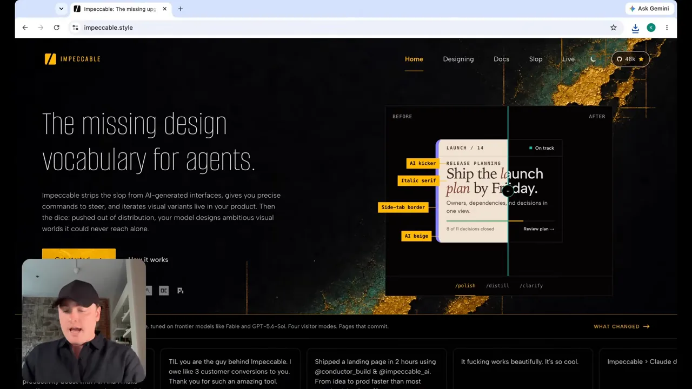
Claude, Codex, Grok, Cursor 등 어떤 도구에든 설치할 수 있어요. 설치하면 무엇이 AI 슬롭인지 알아보고 카드나 레이아웃을 다시 짜 줘요. 처음부터 AI 슬롭이 덜 나오게 같이 작업해 주기도 해요.
명령마다 하는 일
사이트에는 명령마다 전후 예시가 있어요. 아래 clarify 예시는 '요청을 처리 중이에요' 같은 막연한 문구를, 저장 중임을 알려 주는 진행 막대와 구체적인 문구로 바꾼 경우예요. 화면 아래쪽에 'Confusing copy → Clear, actionable language'라고 요약돼 있어요.
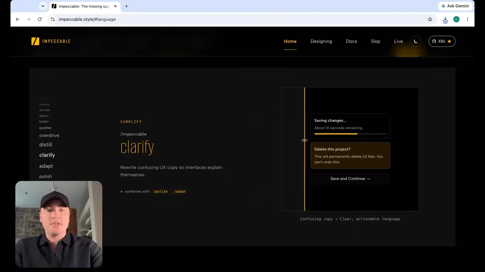
distill은 덜어내는 명령이에요. 아래 예시 설명은 'Ruthless subtraction. Strip designs to their essence', 즉 가차 없이 빼서 본질만 남긴다는 뜻이에요. 오른쪽 대시보드 예시는 요소를 줄인 뒤의 모습이에요.
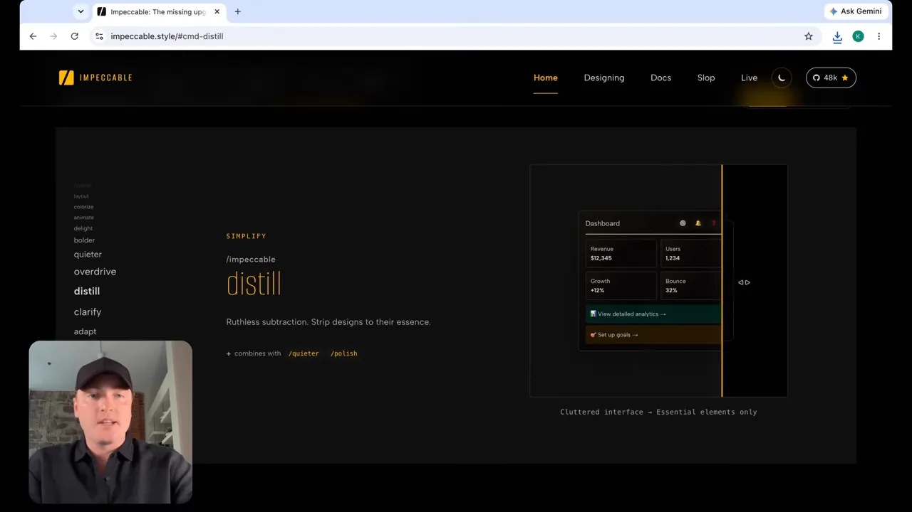
발표자가 언급한 명령을 정리하면 이래요.
| 명령 | 하는 일 | 영상 속 예시 |
|---|---|---|
clarify | 막연한 문구를 구체적으로 | '요청 처리 중' 문구 → 저장 진행 막대 |
distill | 불필요한 요소를 덜어내기 | 글자 많은 화면을 정리, 카드 데모 |
bolder | 밋밋한 디자인을 더 힘 있게 | 평범한 글자 → 눈에 띄는 제목 |
quieter | 너무 시끄러운 디자인을 차분하게 | 요란한 광고형 카드 → 차분한 화면 |
설치하고 데모 돌리기
설치는 문서 페이지의 명령 한 줄이에요. 아래 화면 01번 칸에 npx impeccable install이 있고, 02번은 맥락을 잡는 /impeccable init, 03번은 실제 페이지에 써 보는 예시예요.
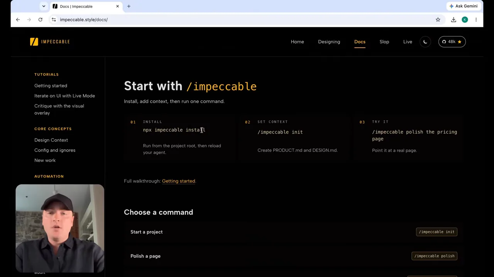
발표자는 이 데모를 Codex로 했어요. Claude Code가 그날 느려서라고 해요. 먼저 Impeccable 없이 "UI 전체 말고 카드 하나만 간단히 만들어 줘"라고 했더니 아래 카드가 나왔어요. 위쪽 원형 일러스트, '진행 중' 태그, 진행 막대, 큰 'Continue learning' 버튼이 다 들어 있어요.
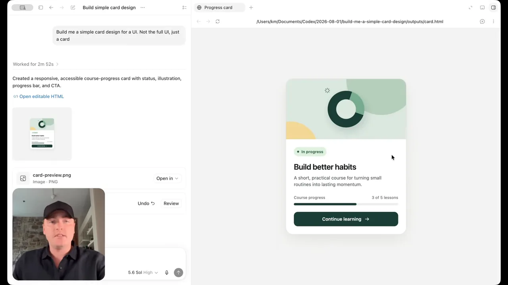
그다음 터미널에서 설치 명령을 실행해요. 아래 화면 아래쪽 터미널에 Impeccable 스킬을 내려받고 .claude, .agents, .cursor, .gemini, .grok 폴더에 설치했다는 줄이 보이고, 마지막에 '/impeccable init을 실행하라'는 안내가 나와요. 몇 초면 끝나요.
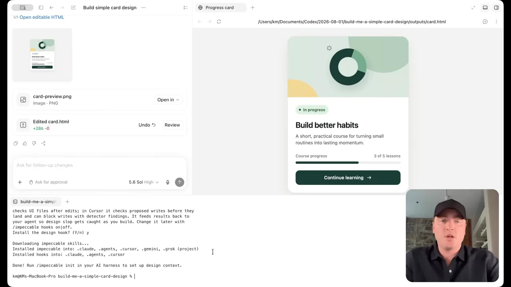
여기서 발표자가 가장 강조하는 건 "Impeccable, 고쳐 줘"라고만 하지 말라는 거예요. 명령을 익히고, 디자인에서 무엇을 바꾸고 싶은지 먼저 정해야 해요. 너무 요란해서 차분하게 하고 싶은지, 반대로 평범한 글자뿐이라 더 눈에 띄게 하고 싶은지요. 아래 bolder 예시가 후자의 경우예요.
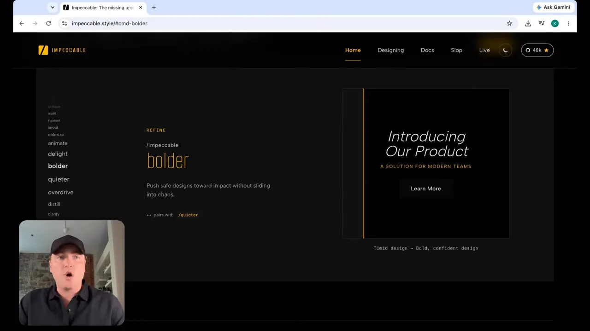
이 카드는 요소가 너무 많다고 보고 Impeccable을 불러 'distill this design'이라고 지시했어요. 발표자는 슬래시로 부른다고 말하지만, Codex 화면에는 $impeccable distill this design으로 찍혀 있어요. 결과는 아래와 같아요. 일러스트와 '진행 중' 태그가 빠졌고, 진행 막대는 '3 of 5 lessons'라는 다섯 칸짜리 표시로 바뀌었고, 큰 버튼은 'Continue learning →' 링크가 됐어요. 왼쪽 채팅에는 일러스트, 겹친 상태 표시, 그림자 등을 지웠고 HTML(HyperText Markup Language)이 43% 작아졌으며 주요 색 대비가 'exceed WCAG AA'라는 설명이 보여요.
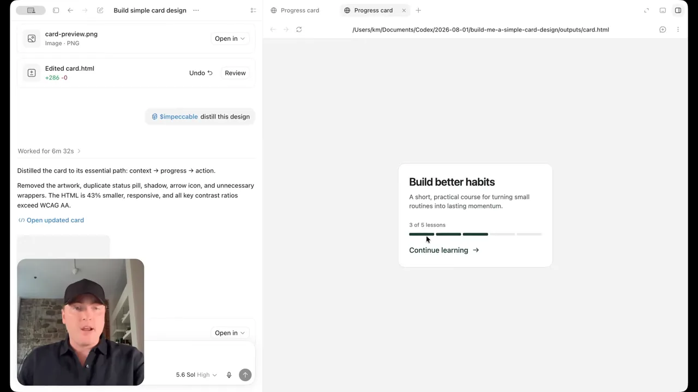
3단계 준비: 브랜드 가이드라인 만들기
발표자는 Impeccable이 좋다고 하면서도 직접 스킬을 만드는 쪽으로 옮겨 가요. 이 구간 화면은 이유를 한 줄씩 적은 글자 슬라이드라서, 아래 표로 옮겼어요.
| Impeccable의 한계 | 발표자 설명 |
|---|---|
| 토큰을 많이 써요 | 세션당이나 5시간 창 안에 쓸 수 있는 토큰이 적은 요금제에서는 금방 문제가 생길 수 있어요 |
| 정해진 브랜드 규칙을 잘 안 따라요 | 기존 브랜드 가이드라인과 스타일을 엄격하게 지키는 데는 약해요 |
| 회사에서는 설치가 막힐 수 있어요 | 은행 같은 곳에서 오픈소스 스킬을 Claude Code에 깔면 컴플라이언스 팀에서 바로 연락이 온다고 해요 |
발표자는 AI가 작업을 거듭하며 브랜드에서 조금씩 벗어나는 브랜드 드리프트가 결국 AI 슬롭으로 이어진다고 봐요. 그래서 우리 제품의 브랜드 규칙을 스킬로 직접 만들어요. 그 전에 먼저 브랜드 가이드라인이 있어야 해요. 발표자는 탄탄한 가이드라인도, 완전한 디자인 시스템도 없는 상황을 가정해요. 많은 팀이 실제로 그렇다고 해요. 이미 디자인 시스템이 있다면 조금 바꿔서 같은 흐름을 쓰면 돼요.
Mobbin 경쟁사 화면으로 가이드라인 만들기
Claude Code에 보낸 요청은 이랬어요.
The product I'm building is a finance product in light mode. Minimal bright colors, soft neutral tones, plenty of white space. Please build me a brand guideline based on competitors in Mobbin.
라이트 모드 금융 제품을 만들고 있어요. 밝은 색은 최소로, 부드러운 뉴트럴 톤, 넉넉한 여백. Mobbin의 경쟁사 화면을 바탕으로 브랜드 가이드라인을 만들어 주세요.
— 영상 12:44
로컬에서 열어 보는 버전과 내려받을 PDF(Portable Document Format) 버전을 함께 달라고 했어요. 아래가 그 결과의 첫 화면이에요. 제품 이름은 'Vantage'이고, 제목은 '차분한 금융 인터페이스를 위한 브랜드·제품 가이드라인'이에요. 아래쪽 정보 줄에 'Light only', '34 enforceable'(지킬 수 있는 규칙 34개)이 보여요.
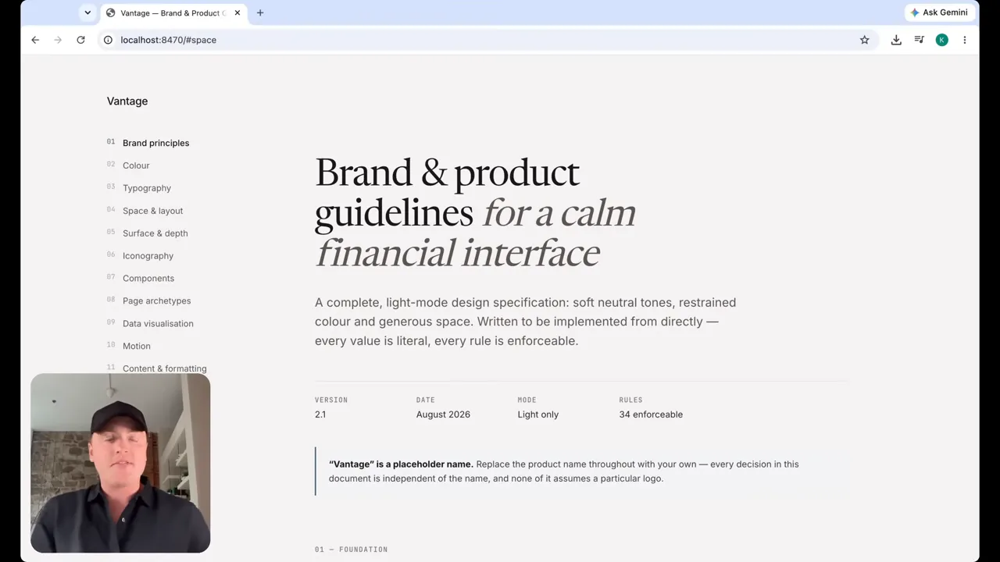
안에는 AI가 그대로 따를 수 있는 값이 들어 있어요. 아래 간격 표는 페이지 여백, 카드 안쪽 여백, 카드 사이 간격 같은 항목마다 데스크톱 값과 모바일 값을 따로 적어 뒀어요.
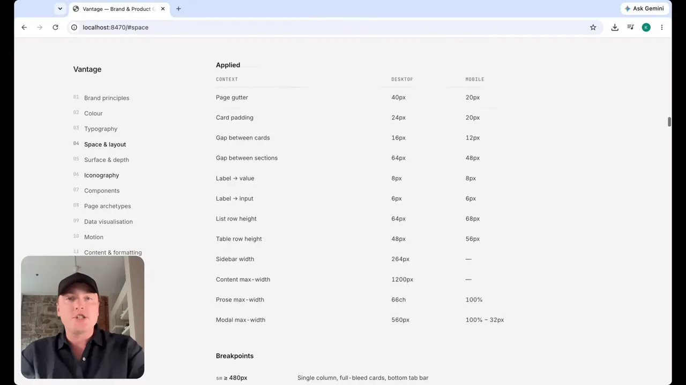
컴포넌트는 버튼, 입력창, 배지, 세그먼트 컨트롤, 지표 타일, 거래 행, 데이터 표, 빈 상태까지가 전부예요. 아래 페이지 원형은 '금융 제품의 거의 모든 화면을 다섯 가지 레이아웃으로 만든다'고 적어 두고 개요, 목록+상세, 흐름, 설정 같은 틀을 보여 줘요.
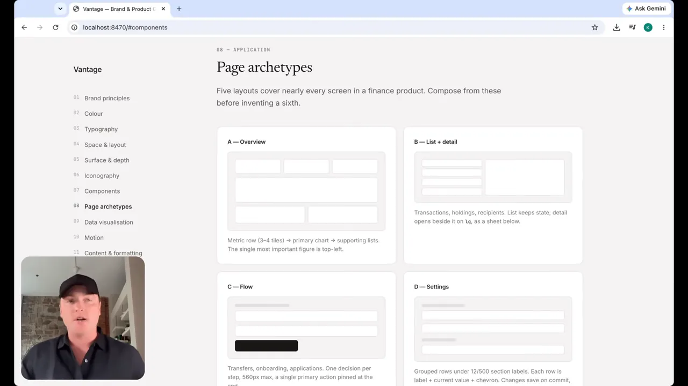
발표자는 이게 완전한 디자인 시스템이 아니라는 점을 여러 번 짚어요. 모든 색 단계와 사용 사례가 다 들어 있지 않아요. 완전한 디자인 시스템이었다면 스킬 하나로 묶기엔 정보가 너무 많고, 그건 다른 작업 흐름이라고 해요.
3단계: 브랜드 스킬로 대시보드까지
이제 이 가이드라인을 Claude 스킬로 만들어요. 일반 Claude 앱에 가이드라인 PDF를 첨부하고 아래 요청을 보냈어요. 화면 가운데 입력창 위에 첨부한 PDF가 보여요.
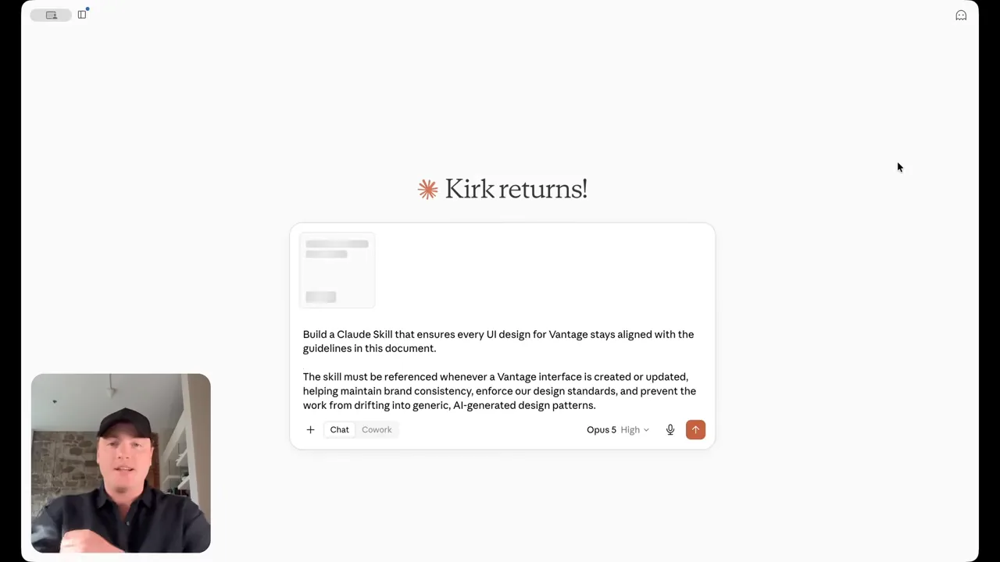
나온 스킬은 생각보다 촘촘해요. 아래 화면 가운데 파일 목록을 보면 디자인 토큰 파일(tokens.css, tokens.json)과 참고 문서(components.md, layout.md, rules-digest.md 등), 그리고 SKILL.md로 나뉘어 있어요. 오른쪽 설명 끝에는 '값을 기억에 의존해 추측하지 말 것, 가장 흔한 실패는 일반적인 AI 기본값으로 흘러가는 것'이라는 문장이 있어요.
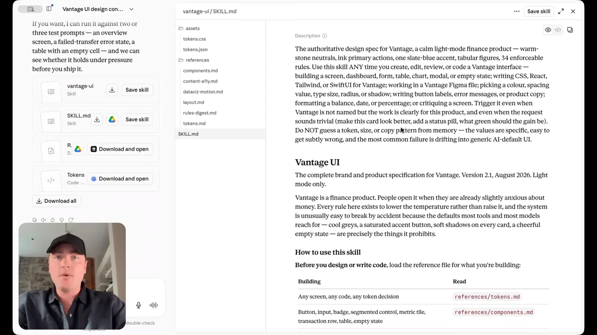
왜 '미니' 디자인 시스템인가
발표자는 이 스킬이 진짜 디자인 시스템이 아니라는 점을 숫자로 보여 줘요. 아래 슬라이드처럼 색은 80개가 아니라 20개 정도, 컴포넌트는 50개가 아니라 6개 정도였어요.

발표자 말로는 컴포넌트, 색, 사용 사례를 다 갖춘 진짜 디자인 시스템을 넣으면 오히려 AI 슬롭을 피하기가 아주 어려워요. AI가 읽어야 할 양이 너무 많기 때문이에요. 이 미니 디자인 시스템은 AI가 소화할 수 있는 크기로 만들어서 Mobbin MCP, Impeccable과 함께 돌아가게 하는 게 목적이에요.
세 가지를 합친 마지막 데모
마지막 요청은 짧아요. "Stripe에서 영감을 받은 Vantage 대시보드를 만들어 줘." 발표자는 여기서 앞의 단계들이 하나의 흐름이 된다고 설명해요. 아래 그림이 그 순서예요.
flowchart LR P["요청: Stripe 느낌의 Vantage 대시보드"] --> C["Claude"] C -->|"Mobbin MCP로 검색"| M["Stripe 대시보드 화면"] C -->|"스킬 읽기"| S["Vantage 스킬 (미니 디자인 시스템)"] M --> D["Vantage 대시보드"] S --> D
결과 화면 위쪽에는 총 거래액 $354,495와 기간 비교 그래프가 있고, 그 아래 순거래액, 성공한 결제 수, 평균 결제액, 실패율을 담은 지표 카드 네 개가 나란히 있어요. 발표자는 이 카드들이 가이드라인 PDF에서 본 것과 거의 같다며 스킬을 잘 읽었다고 평가해요.

스크롤을 내리면 결제 수단별 거래액(Visa, Mastercard, ACH(Automated Clearing House) 등)과 잔액 카드가 나와요. 금액은 오른쪽 정렬된 숫자로, 비율은 가는 막대로 보여 줘요. 발표자는 이 부분 처리도 좋다고 말해요.
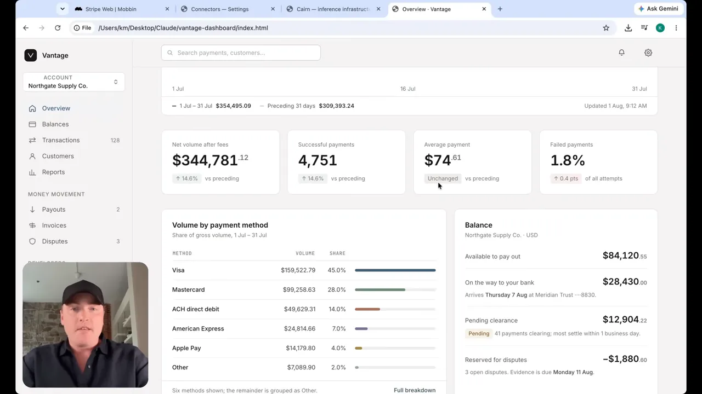
발표자는 시니어 디자이너가 자세히 보면 AI가 관여했다는 걸 알아챌 만한 작은 부분이 남아 있다고 인정해요. 그래도 출발점으로는 충분히 좋고, 남은 부분은 Impeccable 명령으로 다듬으면 된다고 정리해요.